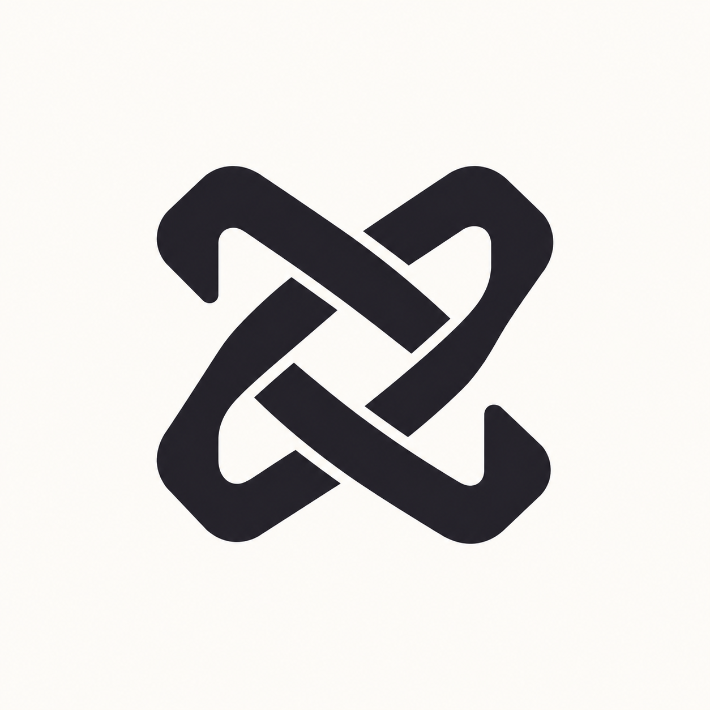

正在准备工作台…

使用团队账户继续。
新账号使用工作台号；元老账号可继续使用原登录方式。
正在连接团队服务器…
从左侧打开文件；文本和源码可直接编辑，Ctrl+S 保存。
输入文件名，也可以带目录，例如 notes/记录.md。
首次提交需设置 Git 身份，只填一次。
连接提供商或兼容接口中转站。
即时保存到本机；不会上传壁纸。文字和编辑区域保持清晰。
用不到的模块可以关闭，关闭后不显示入口；任务、实验和上传附件仍可正常使用。
浏览、搜索和编辑文件，关闭后隐藏顶部仓库入口。
确认改动后提交和同步，也可打开 GitHub 页面。
使用模型 API 对话，关闭后隐藏顶部 AI 入口。
已预设团队服务器，正常使用无需配置。只有团队更换服务器时才需要修改地址；所有业务数据由团队服务器保存。
正在读取更新状态…